vyuha.
the turning labyrinth
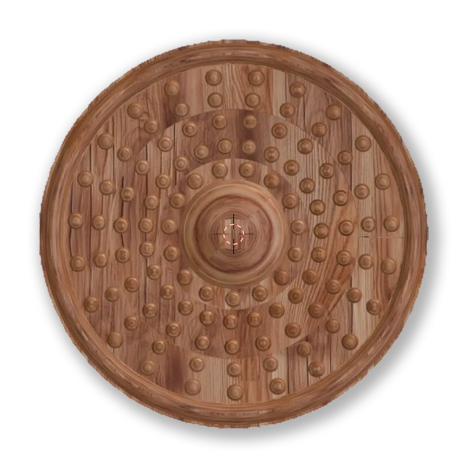
A two-player strategy game set on a rotating, multi-layered board.
Vyuha reworks classic Marble Solitaire into a competitive game for two players. It retains Solitaire’s jump-and-capture mechanic and places it within the Chakra Vyuha, the rotating battle formation from the Mahabharata: one player attempts to break through to the centre, while the other rotates the board’s rings to defend it.
concept
Rooted in personal and cultural memory.
The project draws on two childhood influences. My grandmother taught me Marble Solitaire, and alongside it she shared stories from the Mahabharata, in particular the Chakra Vyuha: a circular, rotating military formation that became increasingly difficult to penetrate towards its centre.
Solitaire is a quiet, solitary puzzle. My aim was to preserve its considered, strategic quality while introducing a second player and a board that changes during play, adding tension and replay value.
A formation that shifts in play.
The board consists of a base and three independently rotating rings, mirroring the formation’s defensive layers. The Breaker (blue) has a small team and must land a marble in the centre. The Defender (red) has a larger team and may rotate any ring by one position instead of moving, disrupting the Breaker’s lines of attack.
Two personas guided the design: a curious eight-year-old drawn to marbles and mythology, and an adult who values craftsmanship and wishes to share Indian heritage with family or students.
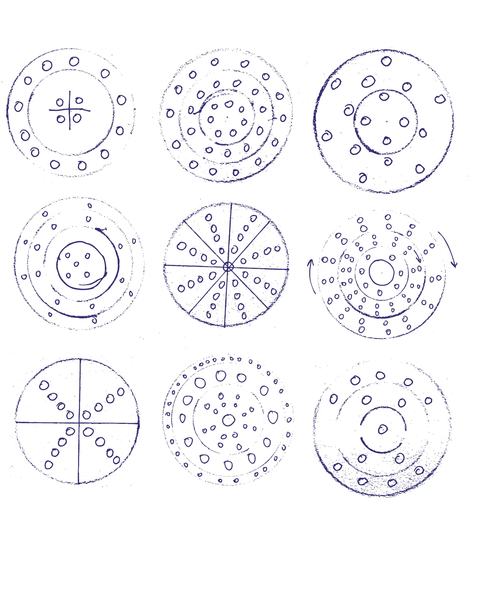
Initial sketches exploring hole layouts, ring divisions and movement between layers.
progress
Modelling the board in Blender.
I developed the 3D model in Blender, beginning with the base and adding the three rings as separate objects so that each could rotate independently.
Hole positions were arrayed along circular curves and cut using boolean operations. Placing marbles along the same paths allowed me to test spacing and confirm that pieces could align across rings for a jump, refining the geometry through several iterations.
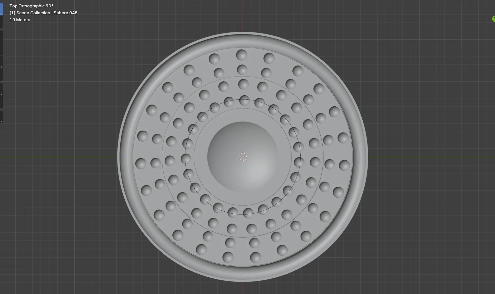
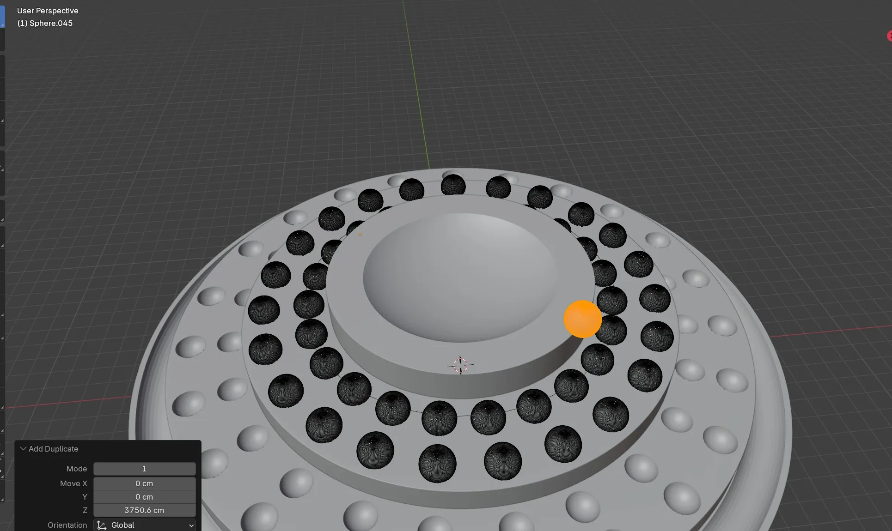
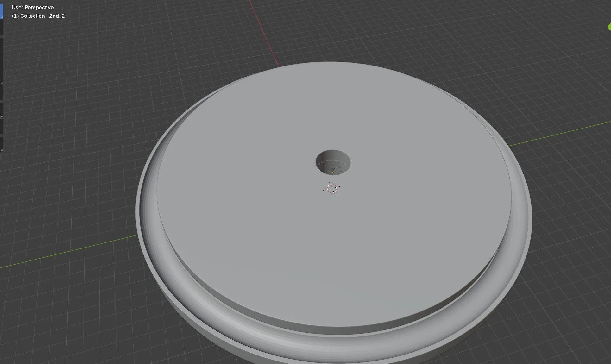
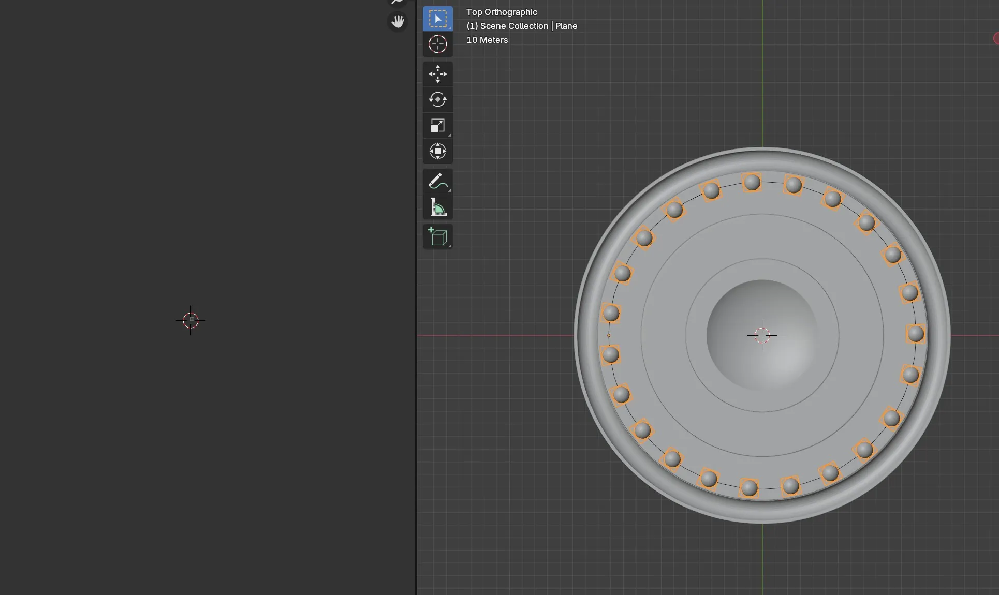
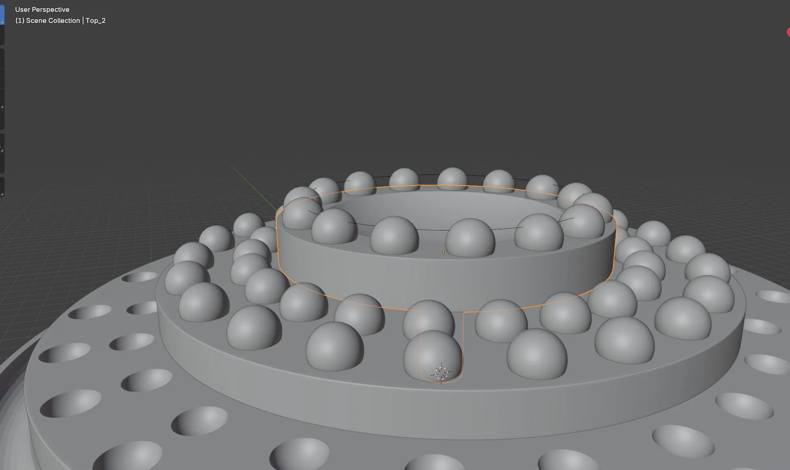
Top: the full hole pattern from above; holes cut into the rings with boolean spheres. Bottom: the base disc; holes arrayed along a circular curve; marbles placed to check spacing.
From digital model to physical prototype.
Once the form was resolved, I UV-unwrapped each ring and applied a wood material using diffuse, roughness and bump maps, with lighting set up to reveal the grain and stepped profile.
To validate the concept physically, the rings were 3D printed and playtested with peers. Testing focused on how smoothly the rings rotated, whether the marbles sat securely, and how intuitive the jump-and-rotate rules were for new players.
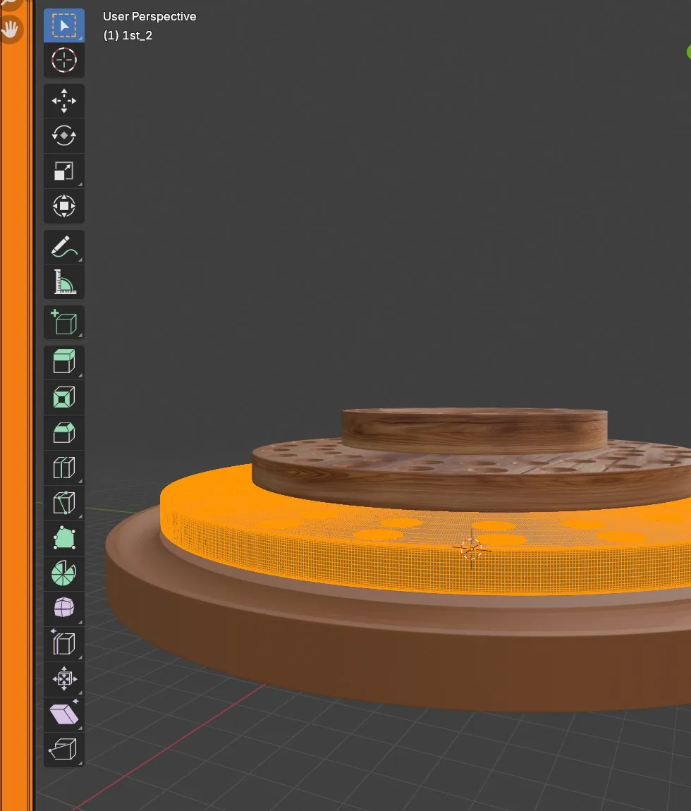
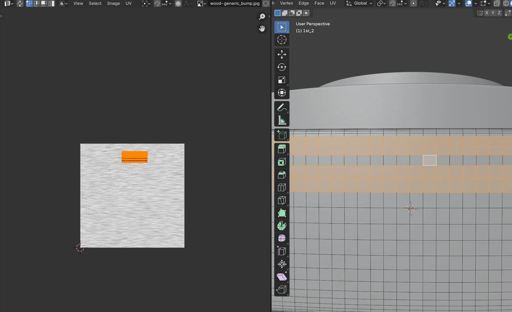
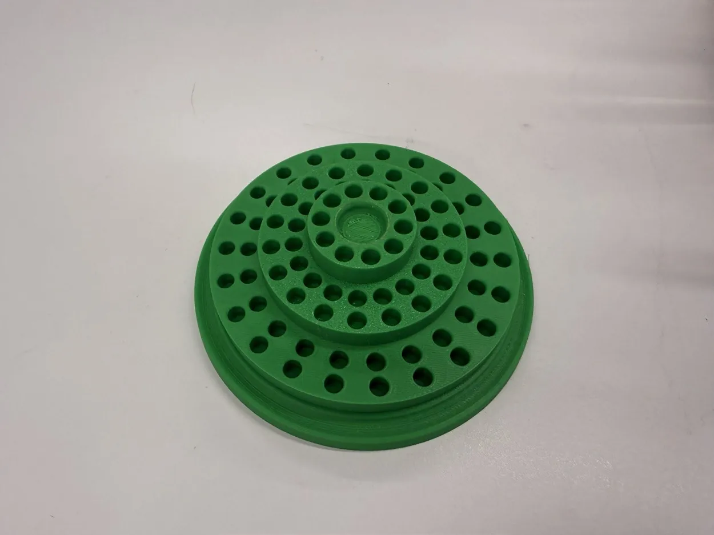
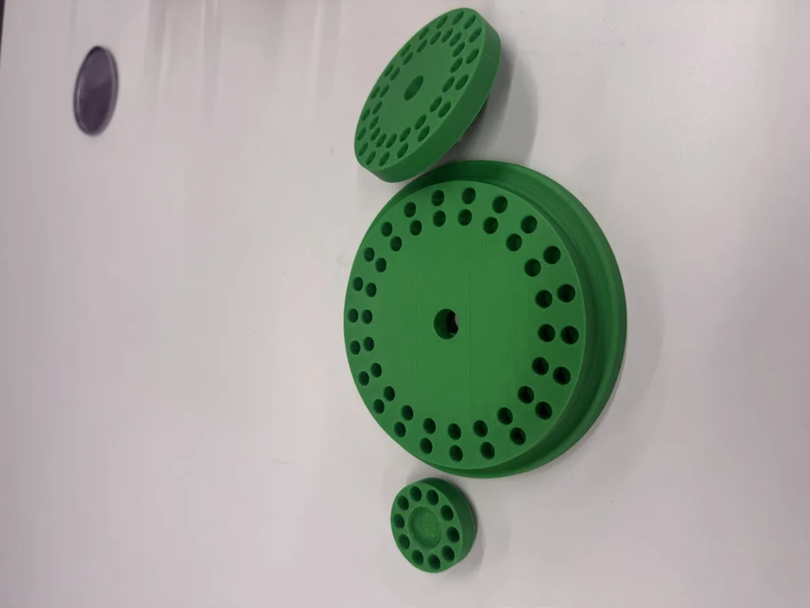
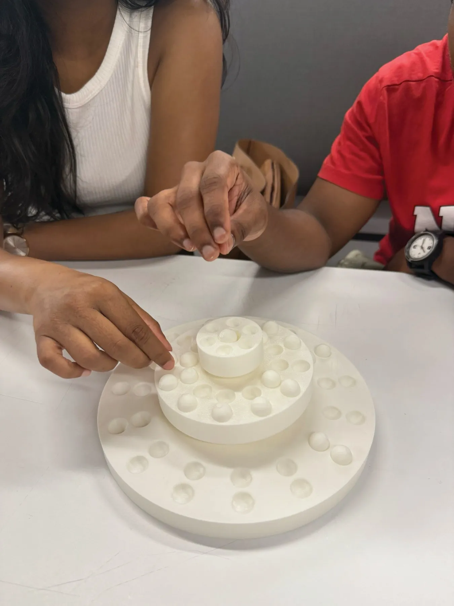
Top: applying the wood material and UV mapping. Bottom: 3D-printed prototype of the stacked rings and base; playtesting the printed prototype with peers.
A modular wooden board designed to last.
The final design comprises four stackable wooden components, a base and three rotating rings, played with 12 red and 7 blue marbles. The exploded view shows how each layer sits on a central post and rotates independently.
Designed for wood fabrication rather than plastic, Vyuha is intended to be durable, repairable and reusable: a game that can be kept and passed on, much like the one that inspired it.
outcome
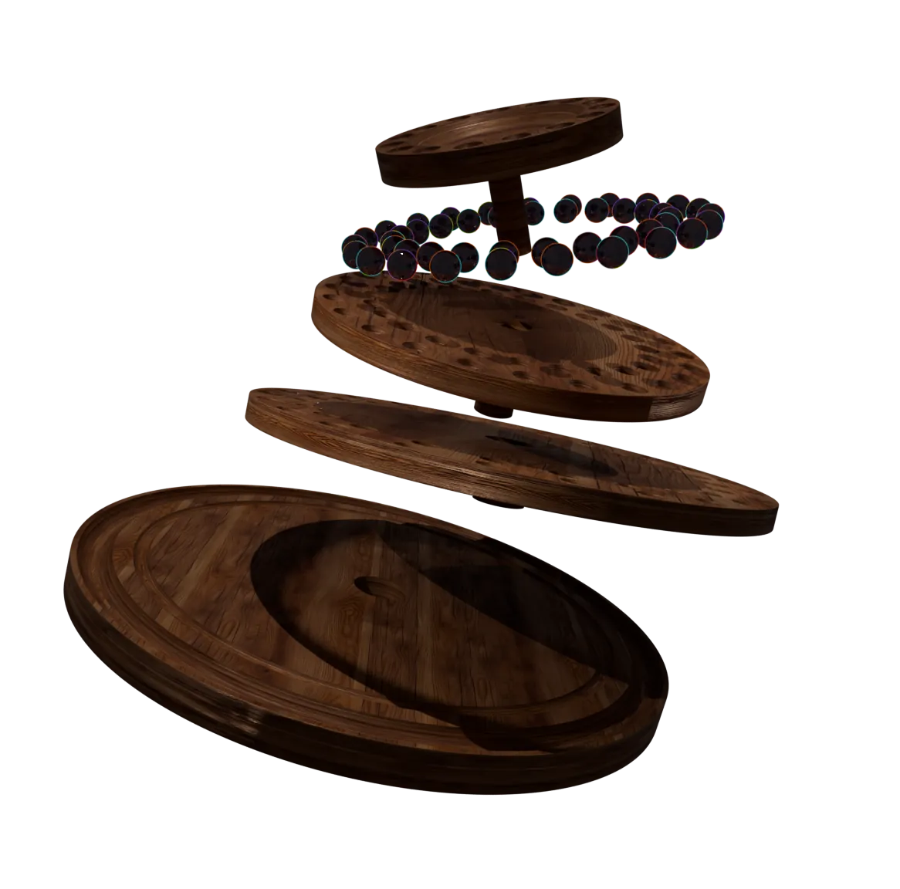
Packaging that reflects the game’s origins.
The packaging uses a deep indigo to evoke Lord Krishna’s wisdom, paired with gold linework referencing the grandeur of the Kuru kingdom. The lettering draws on Devanagari to anchor the game in its cultural roots.
The mandala on the lid is derived from the board itself. Its interlacing geometry traces the layered formation of the Chakra Vyuha, previewing the game before the box is opened.
outcome
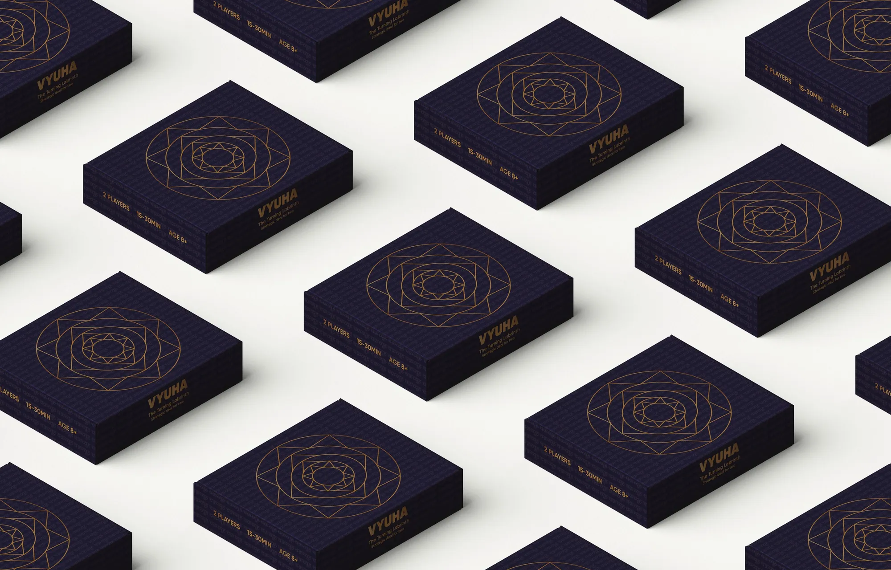